第7章
物体的直线上升或下降
命题32 问题24
设向心力反比于处所到中心的距离的平方；求物体在给定时间内沿直线下落的距离。
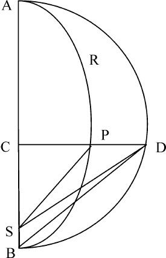
情形1．如果物体不是垂直下落，它将（根据命题13，推论I）掠过一焦点在力的中心的圆锥曲线。设该圆锥曲线为ARPB，焦点为S。首先，如果轨迹是椭圆，在长轴AB上作半圆ADB，令直线DPC通过下落物体，与主轴成直角；再作DS，PS，则面积ASD将正比于面积ASP，所以也正比于时间。保持主轴AB不变，令椭圆的宽度连续缩小，面积ASD总是正比于时间。设宽度无限缩小；此时轨道APB与主轴AB重合，焦点S与主轴顶点B重合，则物体沿直线AC下落，面积ABD也将正比于时间。所以，如果取面积ABD正比于时间，并由点D作直线DC垂直落向直线AB，则物体在给定时间内由处所A垂直下落所掠过的距离可以求出。
完毕。
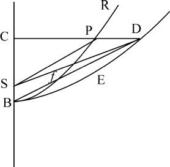
情形2．如果图形RPB是双曲线，在同一主轴AB上作直角双曲线BED；因为在几块面积与高度CP和CD之间有如下关系存在：CSP:CSD＝CBf D:CBED＝SPf B:SDEB＝CP:CD，以及面积SPf B正比于物体P通过弧Pf B所用的时间而变化，面积SDEB也将正比于时间变化。令双曲线RPB的通径无限缩小，同时横轴保持不变，则弧PB将与直线CB重合，焦点S与顶点B重合，而直线SD与直线BD重合。所以面积BDEB将正比于物体C沿直线CB垂直下落所用时间而变化。
完毕。
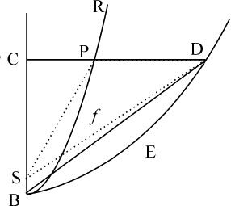
情形3．由相似理由，如果图形RPB是抛物线，以同一顶点B作另一条抛物线BED，并使之保持不变，同时物体P沿其边缘运动的前一条抛物线随着其通径缩小并变为零而与直线CB重合，则抛物线截面BDED将正比于物体P或C落向中心S或C所用的时间而变化。
完毕。
命题33 定理9
在上述假设中，落体在任意处所C的速度与它环绕以B为中心，BC为半径的圆运动的速度的比，等于物体到该圆或直角双曲线的远顶点A的距离与该图形的主半径
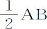
的比值的平方根。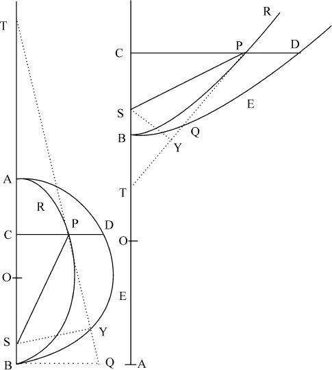
令两个图形RPB，DEB的公共直径AB在O点被等分；作直线PT与图形RPB相切于P，并与公共直径AB（必要时作延长）相交于T；令SY垂直于该直线，BQ垂直于直径，设图形RPB的通径为L。由命题16推论IX知，物体沿关于中心S的曲线RPB运动时在任意处所P的速度，比它沿关于同一中心，半径为SP的圆运动的速度，等于乘积
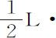
SP与SY2 的比值的平方根。因为由圆锥曲线的性质，AC·CB比CP2 等于2AO比L，所以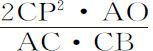
等于L。所以这些速度相互间的比等于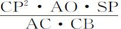
与SY2 的比值的平方根。又根据圆锥曲线的性质。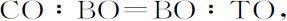
所以，
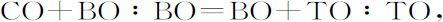
而且，
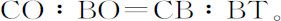
由此，
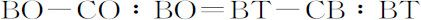
而且，
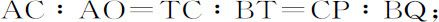
由于，
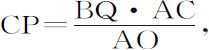
即得到，
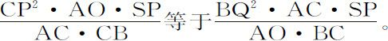
现在设图形RPB的宽CP无限缩小，使点P与点C重合，点S与点B重合，直线SP与直线BC重合，直线SY与直线BQ重合；则物体沿直线CB垂直下落的速度比它沿以B为中心，BC为半径的圆运动的速度，等于
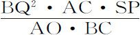
与SY2 的比值的平方根，即（消去相等的比值SP比BC，以及BQ2 比SY2 ）等于AC与AO或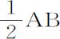
的比值的平方根。证毕。
推论Ⅰ．当点B与S重合时，TC比TS将等于AC比AO。
推论Ⅱ．以给定距离绕中心做圆周运动的物体，当其运动变为竖直向上时，可上升到距中心二倍的高度。
命题34 定理10
如果图形BED是抛物线，则落体在任意处所C的速度等于物体以间隔BC的一半关于中心B做匀速圆运动的速度。
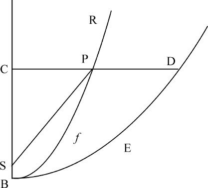
因为（由命题16，推论Ⅶ）物体沿关于中心S的抛物线RPB运动时，在任意处所P的速度，等于物体在间隔SP的一半处关于同一中心做匀速圆运动的速度，令抛物线宽CP无限缩小，使抛物线弧Pf B与直线CB重合，中心S与顶点B重合，间隔SP与间隔BC重合，命题得证。
证毕。
命题35 定理11
在相同假设下，不定半径SD所掠过的图形的面积DES，等于物体以图形DES的通径的一半为半径关于中心S做匀速圆运动在相同时间里所掠过的面积。
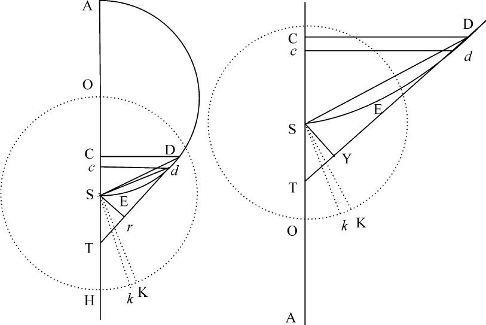
设物体C在最小时间间隔里下落一个不定小线段Cc ，同时另一物体K关于中心S沿圆周OKk 作匀速运动，掠过弧Kk 。作垂线CD，cd 与图形DES相交于D，d 。连接SD，Sd ，SK，Sk ，作Dd 与轴AS交于T，并在其上作垂线SY。
情形1．如果图形DES是圆，或直角双曲线，在O点等分其横向直径AS，则SO为其半通径。而因为
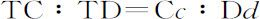
以及
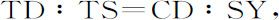
即得到
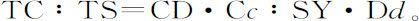
但（由命题33，推论Ⅰ）
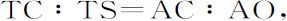
即，如果点D，d 合并，取线段的最后比值。所以，
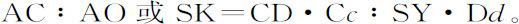
而且，落体在C的速度比物体以间隔SC关于中心S作圆运动的速度，等于AC与AO或SK的比值的平方根（由命题33）；而该速度比物体沿圆OKk 运动的速度等于SK与SC的比值的平方根（由命题4，推论Ⅵ）；因而，第一个速度比最后一个速度，即小线段Cc 比弧Kk ，等于AC与SC的比值的平方根，即等于AC与CD的比值。
所以，
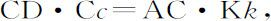
因而，
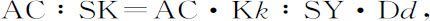
而且
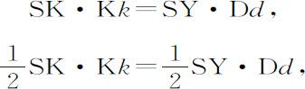
即面积KSk 等于面积SDd 。所以，在每一个时间间隔中，都产生出两个相等的面积元KSk 和SDd ，如果它们在大小趋于零，而数目无限增多，则（由引理Ⅳ的推论）得到二者同时产生的整个面积总是相等的。
证毕。
情形2．如果图形DES是抛物线，与上述情形相同，也有
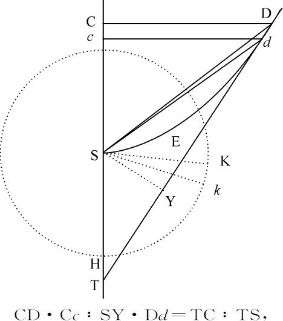
即＝2:1，所以，
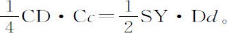
但落体在C点的速度等于在间隔
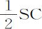
处作匀速圆周运动的速度（由命题34）。而该速度比沿以半径SK作圆运动的速度，即小线段Cc 比弧Kk ，（由命题4，推论Ⅵ）等于SK与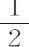
SC的比值的平方根；即等于SK比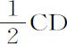
。所以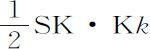
等于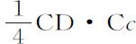
，所以等于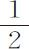
SY·Dd ；即面积KSK等于面积SDd ，与上述情形相同。证毕。
命题36 问题25
求物体自给定处所A下落的时间。
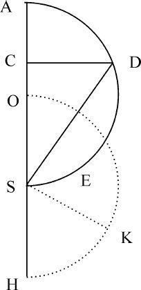
在直径AS上，以开始下落时物体到中心距离为半径作半圆ADS，再以为中心作一相同的半圆OKH。由物体的任意处所C作纵坐标CD。连接SD，取扇形OSK等于面积ASD。显然（由命题35）在落体掠过距离AC的同时，另一关于中心S作匀速圆运动的物体将掠过弧OK。
完毕。
命题37 问题26
求由给定处所上抛或下抛物体所用的上升或下降的时间。
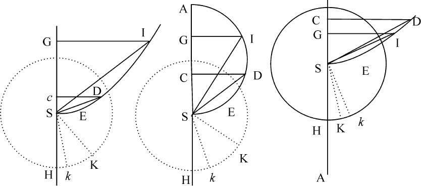
设物体以任意速度沿直线GS离开给定处所G，取GA比
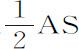
等于该速度与该物体以给定间隔SG关于中心S作匀速圆运动的速度的比值平方。如果该比值等于2比1，则点A在无限远处；此时应像命题34所说画一抛物线，其通径是任意的，顶点为S，主轴为SG；但如果该比值小于或大于2比1，则根据命题33，应在直径SA上，前一情形画一个圆，后一情形画一直角双曲线。然后关于中心S，以半通径为半径画一个圆Hk K；再在物体开始上升或下降的处所G，以及其任意处所C，作垂直线GI，CD，与圆锥曲线或圆交于I和D。连接SI，SD，令扇形HSK，HSk 等于弓形SEIS，SEDS，则在（由命题35）物体G掠过距离GC的同时，物体K掠过弧Kk 。完毕。
命题38 定理12
设向心力正比于物体的处所到中心的高度或距离，则物体下落的时间和速度，以及所掠过的距离，将分别正比于弧，弧的正弦和正矢。
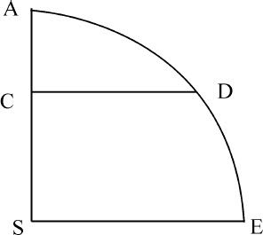
设物体由任意处所A沿直线AS下落；关于力的中心S，以AS为半径作四分之一圆AE；令CD为任意弧AD的正弦，则物体A将在时间AD内下落掠过距离AC，并在处所C获得速度CD。
此定理证法与命题10相同，一如命题32由命题11得证。
推论Ⅰ．物体由处所A到达中心S所用时间，与另一物体掠过四分之一圆弧ADE所用时间相等。
推论Ⅱ．所以物体由任意处所到达中心的时间都相等。因为（由命题4，推论Ⅲ）所有环绕物体的周期都相等。
命题39 问题27
设已知任意种类的向心力，以及曲线图形的面积：求沿一直线上升或下落的物体在它所通过的不同处所的速度，以及它到达任一处所所用的时间；或反过来由速度或时间求出处所。
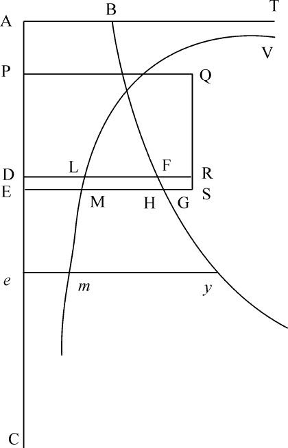
设物体E由任意处所A沿直线ADEC下落；在处所E设想一垂线EG总是正比于在该点指向中心C的向心力；令BFG为一曲线，是点G的轨迹。在开始运动处设EG与垂线AB重合；则在任意处所E物体的速度将是一条直线，其平方等于曲线面积ABGE。
完毕。
因为，在直线AE上取一段已知极小线段，令物体位D时直线EMG的处所在DLF；如果向心力使得一条直线，其平方等于面积ABGE，正比于落体的速度，则该面积将正比速度的平方；即，如果把在D和E处的速度记为V和V＋I，则面积ABFD将正比于VV，而面积ABGE正比于VV＋2VI＋II；由减法，面积DFGE正比于2VI＋II，所以
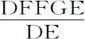
将正比于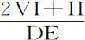
；即，如果取这些量刚产生时的最初比值，则长度DF正比于量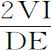
，所以也正比于该量的一半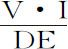
，但物体掠过极小线段DE所用时间正比于该线段，反比于速度V；而力正比速度的增量I，反比于时间；所以，如果取这些量刚产生时的最初比值，则力正比于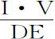
，即正比于长度DF。所以正比于DF或EG的力将使物体以正比于其平方等于面积ABGE的直线的速度下落。完毕。
而且，由于掠过极小的给定长度DE所用的时间反比于速度，因而也反比于其平方等于面积ABFD的直线；又由于线段DL，因而刚产生的面积DLME，反比于同一直线，则时间正比于面积DLME，所有时间的和将正比于所用面积的和；即（由引理4的推论），掠过AE所用的全部时间正比于整个面积ATVME。
证毕。
推论Ⅰ．令P为物体应由之开始下落的处所，使得当它受到任意已知的均匀向心力（如常见的引力）的作用时，在处所D获得的速度，等于另一物体受任意力作用下落到同一处所D时所获得的速度。在垂线DF上取DR，它比DF等于该均匀力比在处所D的另一个力。作矩形PDRQ，分割面积ABFD等于该矩形，则A为另一个物体所由之下落的处所。因为作矩形DRSE，由于面积ABFD比面积DFGE等于VV比2VI，所以等于
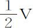
比I，即等于总速度的一半比下落物体受变化力作用产生的速度增量；用类似方法，面积PQRD比面积DRSE等于总速度的一半比下落物体受均匀力作用产生的速度增量；而由于这些增量（考虑到初始时间的相等性）正比于产生它们的力，即，正比于纵坐标DF，DR，因而正比于新生面积DFGE，DRSE；所以，整个面积ABFD，PQRD相互间的比正比于总速度的一半；所以，由于这些速度相等，它们也相等。
推论Ⅱ．如果任意物体被由任意处所D以给定速度向上或向下抛出，并且所受到的向心力的定律已给定，则它在任意其他场所，如e 的速度，可以这样求出：作纵坐标eg ，取该速度比在处所D的速度等于其平方为矩形PQPD，再加上曲线面积DFge ，如果处所e 低于处所D，或减同一面积DFge ，如果处所e 高于D的直线，比其平方刚好等于矩形PQRD的直线。
推论Ⅲ．时间也可以这样求得：作纵坐标em 反比于PQRD＋或－DFge 的平方根，取物体掠过线段De 的时间比另一物体受均匀力由P下落到达到D所用的时间等于曲线面积DLme 比乘积2PD·DL。因为，物体受均匀力作用掠过线段PD的时间比同一物体掠过线段PE所用的时间等于PD与PE比值的平方根；即（极小线段DE刚刚产生），等于PD与
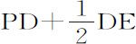
或2PD与2PD＋DE的比值，由减法，它比物体掠过小线段DE所用的时间，等于2PD比DE，所以，等于乘积2PD·DL比面积DLME；两个物体掠过极小线段DE的时间比物体以变化运动掠过线段De 的时间，等于面积DLME比面积DLMe ；所以，上述时间中的第一个与最后一个的比等于乘积2PD·DL比面积DLme 。